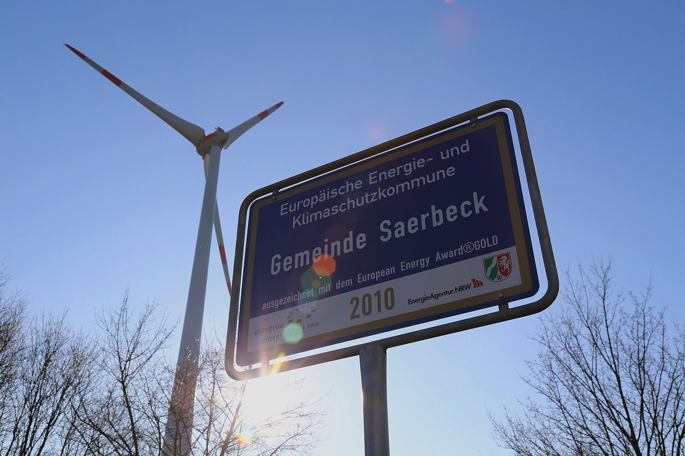

독일 기후 지자체 자르베크, 마을 바이오가스·풍력 전기로 데우는 지역 열망 요금 28일 주민총회서 공개…마을 중심 건물 455곳 대상

열 사업체 베르메베르크, 11월부터 2027년 3월까지 연결 가계약 받아…계약이 충분히 모이면 지자체 의회가 최종 결정하고 연결률 높은 거리부터 공사, 첫 열 공급은 2028년 말 목표
독일 노르트라인베스트팔렌 주의 '기후 지자체' 자르베크(Saerbeck)가 마을 안에서 나는 바이오가스와 풍력 전기를 열원으로 쓰는 지역 열망의 요금을 10월 28일 저녁 6시 30분 마을 회관 뷔르거샤이네에서 열리는 주민총회에서 공개한다. 타당성 조사에서는 요금이 히트펌프와 견줘도 경쟁력이 있는 것으로 나왔고, 열원이 지역 에너지여서 국제 시장에서 거래되는 천연가스·석유 값이 오르내리는 데서 대체로 벗어날 수 있다는 것이 지자체 측 설명이다. 1차 대상 지역은 뮐렌바흐와 부스만스바흐 사이 마을 중심부의 건물 455곳으로, 기존 '유리 열 공급센터(Gläserne Heizzentrale)' 열망을 합쳐 린덴 거리와 에슈가르텐 주거지까지 연결할 수 있게 된다. 열 사업체 베르메베르크 자르베크(Waermewerk Saerbeck)는 11월부터 2027년 3월까지 기존 보일러를 열교환기로 바꾸는 연결 계약을 제안하며, 주민총회에서는 토비아스 레베르크 시장과 마르틴 잠러 기후 지자체 전담부서장, 안드레아스 베네만 계획국장, 열 협동조합 준비모임과 지역 가스회사 SaerGas 대표가 가계약 조건과 요금을 설명한다. 2027년 3월까지 연결 계약이 충분히 모였는지가 지자체 의회 최종 결정의 근거가 되고, 4월 열 공급센터에서 만들 전기의 계통 공급 낙찰이 나오면 연결률이 충분히 높은 거리부터 설계와 공사를 시작해 2028년 말 첫 열을 공급할 계획이다.
시민에너지 관점
자르베크는 455곳 건물에 가계약을 먼저 받고 계약이 충분히 모인 거리부터 관을 묻는 순서를 택했는데, 수요를 먼저 확인한 뒤 짓는 방식이라 쓰이지 않는 관에 돈을 묻을 위험을 줄인다. 주민이 가입하지 않으면 사업이 멈출 수 있다는 우려도 있지만, 거꾸로 보면 주민의 선택이 사업을 결정하는 조건이 된다는 뜻이고, 공사 전에 요금을 공개하고 주민 앞에서 설명하는 과정이 그 신뢰를 쌓는다. 열원을 마을의 바이오가스와 풍력에서 얻고 열 협동조합 준비모임이 설명에 함께 나서는 것처럼, 난방까지 지역에서 만들고 주민이 주인으로 참여할수록 연료비가 지역 밖으로 빠져나가지 않는다. 국내 지역 열 사업과 집단 난방 전환도 주민의 가입 의사를 먼저 모으고 요금 조건을 공개한 뒤 짓는 절차를 기본으로 삼아야 한다.
출처: Radio RST 2026-10-28 기자명 없음 원문 보기
ドイツの気候自治体ザーベック、村のバイオガスと風力電気で温める地域熱供給網の料金を28日の住民集会で公表…中心部の建物455棟が対象
熱供給事業体ヴェルメヴェルク、11月から2027年3月まで接続の仮契約を受け付け…契約が十分に集まれば自治体議会が最終決定し接続率の高い通りから工事、初の熱供給は2028年末が目標
ドイツ・ノルトライン＝ヴェストファーレン州の「気候自治体」ザーベック（Saerbeck）が、村内で生まれるバイオガスと風力の電気を熱源とする地域熱供給網の料金を、10月28日午後6時30分から集会施設ビュルガーシャイネで開く住民集会で公表する。実現可能性調査では料金はヒートポンプと比べても競争力があるとされ、熱源が地域のエネルギーであるため、国際市場で取引される天然ガスや石油の価格変動からほぼ切り離せるというのが自治体側の説明だ。第1段階の対象地域はミューレンバッハとブスマンスバッハの間の村中心部にある建物455棟で、既存の「ガラスの熱供給センター（Gläserne Heizzentrale）」の熱供給網を統合することで、リンデン通りやエッシュガルテン住宅地にも接続できるようになる。熱供給事業体ヴェルメヴェルク・ザーベック（Waermewerk Saerbeck）は11月から2027年3月まで、既存のボイラーを熱交換器に置き換える接続契約を提案し、住民集会ではトビアス・レーベルク村長、気候自治体担当部署長のマルティン・ザムラー氏、計画局長のアンドレアス・ベネマン氏、熱協同組合準備グループと地域ガス会社SaerGasの代表が仮契約の条件と料金を説明する。2027年3月までに接続契約が十分に集まったかどうかが自治体議会の最終決定の根拠となり、4月に熱供給センターで発電する電気の系統供給の落札が決まれば、接続率が十分に高い通りから設計と工事を始め、2028年末に最初の熱を供給する計画だ。
市民エネルギーの視点
ザーベックは455棟の建物から先に仮契約を集め、契約が十分にそろった通りから管を埋める順序を選んだ。需要を先に確かめてから建てるやり方で、使われない管に資金を埋めてしまうリスクを減らせる。住民が加入しなければ事業が止まりかねないとの懸念もあるが、裏を返せば住民の選択が事業を決める条件になるということであり、工事の前に料金を公表して住民の前で説明する過程がその信頼を築く。熱源を村のバイオガスと風力から得て、熱協同組合準備グループも説明に加わるように、暖房まで地域でつくり住民が持ち主として参加するほど、燃料費が地域の外に流れ出なくなる。韓国の地域熱供給事業や集中暖房の転換も、住民の加入意思を先に集め、料金条件を公開してから建設する手続きを基本にすべきだ。
出典: Radio RST 2026-10-28 記者名なし 原文を読む
德国气候市镇萨尔贝克将在28日居民大会上公布以本村沼气和风电供热的区域供热管网价格…覆盖中心区455栋建筑
供热企业Waermewerk将于11月至2027年3月接受接网预签合同…若签约足够，由市镇议会作最终决定，并从接网率高的街道开始施工，首次供热目标为2028年底
德国北莱茵-威斯特法伦州的“气候市镇”萨尔贝克（Saerbeck）将于10月28日晚6时30分在居民会堂Bürgerscheune举行居民大会，公布以本村沼气和风电为热源的区域供热管网价格。可行性研究显示，其价格与热泵相比也具有竞争力；市镇方面介绍，由于热源来自本地能源，这一管网在很大程度上不受国际市场上天然气和石油价格涨跌的影响。第一阶段覆盖范围为米伦巴赫（Mühlenbach）与布斯曼斯巴赫（Bußmannsbach）之间村中心的455栋建筑，并将整合现有“玻璃供热中心”（Gläserne Heizzentrale）的管网，使林登街和埃施加滕住宅区也能接入。供热企业Waermewerk Saerbeck将于11月至2027年3月提供接网合同，把原有锅炉更换为换热器；居民大会上，镇长托比亚斯·莱贝格、气候市镇专责部门负责人马丁·扎姆勒、规划局局长安德烈亚斯·贝内曼，以及供热合作社筹备小组和本地燃气公司SaerGas的代表将说明预签合同的条件和价格。到2027年3月是否签下足够的接网合同，将成为市镇议会作最终决定的依据；若4月供热中心发电上网的中标结果确定，将从接网率足够高的街道开始设计和施工，计划于2028年底首次供热。
市民能源视角
萨尔贝克选择先向455栋建筑征集预签合同，再从签约足够的街道开始埋设管道。这种先确认需求再建设的做法，可以降低把资金埋进闲置管道的风险。有人担心居民不加入项目就可能停摆，但反过来看，这意味着居民的选择成了决定项目的条件，而在施工前公开价格、当面向居民说明的过程正是在建立这种信任。正如热源取自本村的沼气和风电、供热合作社筹备小组也参与说明那样，连供暖也在本地生产、居民越是作为主人参与，燃料费就越不会流出本地。韩国的区域供热项目和集中供暖转型，也应以先征集居民加入意向、公开价格条件后再建设的程序为基本做法。
来源: Radio RST 2026-10-28 未署名 查看原文
German climate municipality Saerbeck to unveil prices on 28 October for a local heat network fed by village biogas and wind power, covering 455 buildings in the centre
Heat company Waermewerk will take connection pre-contracts from November to March 2027; if enough sign up, the municipal council makes the final decision and streets with high take-up are built first, with first heat targeted for the end of 2028
Saerbeck, a "climate municipality" in North Rhine-Westphalia, Germany, will present the prices for a planned local heat network using biogas and wind electricity produced in the village at a residents' meeting in the Bürgerscheune hall at 6.30pm on 28 October. A feasibility study found the prices competitive even against a heat pump, and the municipality says that because the heat comes from local sources the network will be largely shielded from swings in internationally traded gas and oil prices. The first-phase area covers 455 buildings in the village centre between Mühlenbach and Bußmannsbach, and integrating the existing network of the "Glass Heating Centre" (Gläserne Heizzentrale) will also allow connections along Lindenstraße and in the Eschgarten residential area. Heat company Waermewerk Saerbeck will offer connection contracts from November to March 2027, replacing existing boilers with heat exchangers, and at the meeting Mayor Tobias Lehberg, climate municipality unit head Martin Sammler, planning office head Andreas Bennemann and representatives of a heat co-operative initiative group and local gas company SaerGas will explain the terms and prices of the pre-contracts. Whether enough connection contracts are signed by March 2027 will form the basis for the municipal council's final decision, and if the heating centre wins its award for feeding electricity into the grid in April, design and construction will start in streets with a high enough connection rate, with first heat deliveries planned for the end of 2028.
Citizen Energy View
Saerbeck has chosen to collect pre-contracts from 455 buildings first and lay pipes only in streets where enough people sign up, an approach that confirms demand before building and reduces the risk of sinking money into unused pipes. Some worry the project could stall if residents do not join, but that also means residents' choices become the condition for the project, and publishing prices and explaining them face to face before construction is what builds that trust. As with heat drawn from village biogas and wind and a co-operative initiative group helping explain the plan, the more heating is produced locally and the more residents take part as owners, the less fuel money leaves the area. In Korea, too, local heat projects and conversions of district heating should, as a rule, gather residents' commitments and publish price terms before anything is built.
Source: Radio RST 2026-10-28 No byline Read the original